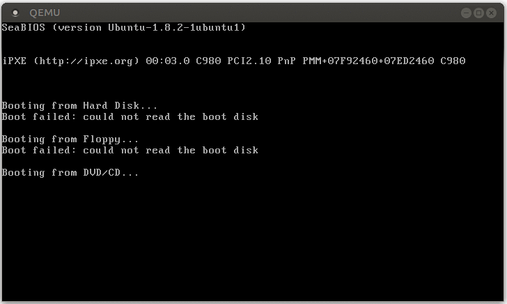
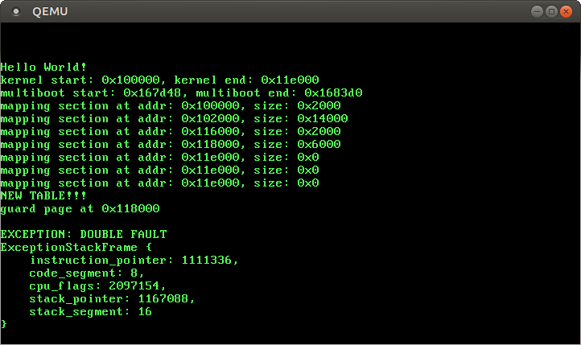
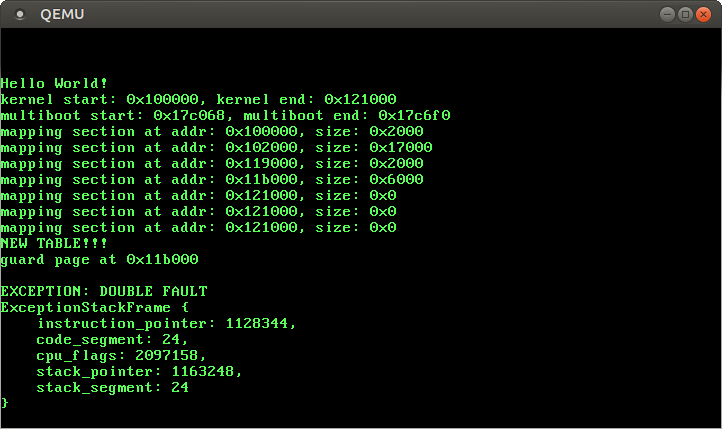

No longer updated! You are viewing the a post of the first edition of “Writing an OS in Rust”, which is no longer updated. You can find the second edition here.
In this post we explore double faults in detail. We also set up an Interrupt Stack Table to catch double faults on a separate kernel stack. This way, we can completely prevent triple faults, even on kernel stack overflow.
As always, the complete source code is available on GitHub. Please file issues for any problems, questions, or improvement suggestions. There is also a gitter chat and a comment section at the end of this page.
In simplified terms, a double fault is a special exception that occurs when the CPU fails to invoke an exception handler. For example, it occurs when a page fault is triggered but there is no page fault handler registered in the Interrupt Descriptor Table (IDT). So it’s kind of similar to catch-all blocks in programming languages with exceptions, e.g. catch(...) in C++ or catch(Exception e) in Java or C#.
A double fault behaves like a normal exception. It has the vector number 8 and we can define a normal handler function for it in the IDT. It is really important to provide a double fault handler, because if a double fault is unhandled a fatal triple fault occurs. Triple faults can’t be caught and most hardware reacts with a system reset.
Let’s provoke a double fault by triggering an exception for that we didn’t define a handler function:
// in src/lib.rs
#[no_mangle]
pub extern "C" fn rust_main(multiboot_information_address: usize) {
...
// initialize our IDT
interrupts::init();
// trigger a page fault
unsafe {
*(0xdeadbeaf as *mut u64) = 42;
};
println!("It did not crash!");
loop {}
}
We try to write to address 0xdeadbeaf, but the corresponding page is not present in the page tables. Thus, a page fault occurs. We haven’t registered a page fault handler in our IDT, so a double fault occurs.
When we start our kernel now, we see that it enters an endless boot loop:

The reason for the boot loop is the following:
The CPU tries to write to 0xdeadbeaf, which causes a page fault.
The CPU looks at the corresponding entry in the IDT and sees that the present bit isn’t set. Thus, it can’t call the page fault handler and a double fault occurs.
The CPU looks at the IDT entry of the double fault handler, but this entry is also non-present. Thus, a triple fault occurs.
A triple fault is fatal. QEMU reacts to it like most real hardware and issues a system reset.
So in order to prevent this triple fault, we need to either provide a handler function for page faults or a double fault handler. Let’s start with the latter, since we want to avoid triple faults in all cases.
Our handler prints a short error message and dumps the exception stack frame. The error code of the double fault handler is always zero, so there’s no reason to print it.
When we start our kernel now, we should see that the double fault handler is invoked:

It worked! Here is what happens this time:
The CPU executes tries to write to 0xdeadbeaf, which causes a page fault.
Like before, the CPU looks at the corresponding entry in the IDT and sees that the present bit isn’t set. Thus, a double fault occurs.
The CPU jumps to the – now present – double fault handler.
The triple fault (and the boot-loop) no longer occurs, since the CPU can now call the double fault handler.
That was quite straightforward! So why do we need a whole post for this topic? Well, we’re now able to catch most double faults, but there are some cases where our current approach doesn’t suffice.
Before we look at the special cases, we need to know the exact causes of double faults. Above, we used a pretty vague definition:
A double fault is a special exception that occurs when the CPU fails to invoke an exception handler.
What does “fails to invoke” mean exactly? The handler is not present? The handler is swapped out? And what happens if a handler causes exceptions itself?
For example, what happens if… :
a divide-by-zero exception occurs, but the corresponding handler function is swapped out?
a page fault occurs, but the page fault handler is swapped out?
a divide-by-zero handler causes a breakpoint exception, but the breakpoint handler is swapped out?
our kernel overflows its stack and the guard page is hit?
Fortunately, the AMD64 manual (PDF) has an exact definition (in Section 8.2.9). According to it, a “double fault exception can occur when a second exception occurs during the handling of a prior (first) exception handler”. The “can” is important: Only very specific combinations of exceptions lead to a double fault. These combinations are:
So for example a divide-by-zero fault followed by a page fault is fine (the page fault handler is invoked), but a divide-by-zero fault followed by a general-protection fault leads to a double fault.
With the help of this table, we can answer the first three of the above questions:
If a divide-by-zero exception occurs and the corresponding handler function is swapped out, a page fault occurs and the page fault handler is invoked.
If a page fault occurs and the page fault handler is swapped out, a double fault occurs and the double fault handler is invoked.
If a divide-by-zero handler causes a breakpoint exception, the CPU tries to invoke the breakpoint handler. If the breakpoint handler is swapped out, a page fault occurs and the page fault handler is invoked.
In fact, even the case of a non-present handler follows this scheme: A non-present handler causes a segment-not-present exception. We didn’t define a segment-not-present handler, so another segment-not-present exception occurs. According to the table, this leads to a double fault.
What happens if our kernel overflows its stack and the guard page is hit?
When our kernel overflows its stack and hits the guard page, a page fault occurs. The CPU looks up the page fault handler in the IDT and tries to push the exception stack frame onto the stack. However, our current stack pointer still points to the non-present guard page. Thus, a second page fault occurs, which causes a double fault (according to the above table).
So the CPU tries to call our double fault handler now. However, on a double fault the CPU tries to push the exception stack frame, too. Our stack pointer still points to the guard page, so a third page fault occurs, which causes a triple fault and a system reboot. So our current double fault handler can’t avoid a triple fault in this case.
Let’s try it ourselves! We can easily provoke a kernel stack overflow by calling a function that recurses endlessly:
// in src/lib.rs
#[no_mangle]
pub extern "C" fn rust_main(multiboot_information_address: usize) {
...
// initialize our IDT
interrupts::init();
fn stack_overflow() {
stack_overflow(); // for each recursion, the return address is pushed
}
// trigger a stack overflow
stack_overflow();
println!("It did not crash!");
loop {}
}
When we try this code in QEMU, we see that the system enters a boot-loop again.
So how can we avoid this problem? We can’t omit the pushing of the exception stack frame, since the CPU itself does it. So we need to ensure somehow that the stack is always valid when a double fault exception occurs. Fortunately, the x86_64 architecture has a solution to this problem.
The x86_64 architecture is able to switch to a predefined, known-good stack when an exception occurs. This switch happens at hardware level, so it can be performed before the CPU pushes the exception stack frame.
This switching mechanism is implemented as an Interrupt Stack Table (IST). The IST is a table of 7 pointers to known-good stacks. In Rust-like pseudo code:
For each exception handler, we can choose a stack from the IST through the options field in the corresponding IDT entry. For example, we could use the first stack in the IST for our double fault handler. Then the CPU would automatically switch to this stack whenever a double fault occurs. This switch would happen before anything is pushed, so it would prevent the triple fault.
In order to fill an Interrupt Stack Table later, we need a way to allocate new stacks. Therefore we extend our memory module with a new stack_allocator submodule:
// in src/memory/mod.rs
mod stack_allocator;
First, we create a new StackAllocator struct and a constructor function:
We create a simple StackAllocator that allocates stacks from a given range of pages (PageIter is an Iterator over a range of pages; we introduced it in the kernel heap post.).
We add a alloc_stack method that allocates a new stack:
// in src/memory/stack_allocator.rs
use memory::paging::{self, Page, ActivePageTable};
use memory::{PAGE_SIZE, FrameAllocator};
impl StackAllocator {
pub fn alloc_stack<FA: FrameAllocator>(&mut self,
active_table: &mut ActivePageTable,
frame_allocator: &mut FA,
size_in_pages: usize)
-> Option<Stack> {
if size_in_pages == 0 {
return None; /* a zero sized stack makes no sense */
}
// clone the range, since we only want to change it on success
let mut range = self.range.clone();
// try to allocate the stack pages and a guard page
let guard_page = range.next();
let stack_start = range.next();
let stack_end = if size_in_pages == 1 {
stack_start
} else {
// choose the (size_in_pages-2)th element, since index
// starts at 0 and we already allocated the start page
range.nth(size_in_pages - 2)
};
match (guard_page, stack_start, stack_end) {
(Some(_), Some(start), Some(end)) => {
// success! write back updated range
self.range = range;
// map stack pages to physical frames
for page in Page::range_inclusive(start, end) {
active_table.map(page, paging::WRITABLE, frame_allocator);
}
// create a new stack
let top_of_stack = end.start_address() + PAGE_SIZE;
Some(Stack::new(top_of_stack, start.start_address()))
}
_ => None, /* not enough pages */
}
}
}
The method takes mutable references to the ActivePageTable and a FrameAllocator, since it needs to map the new virtual stack pages to physical frames. We define that the stack size is a multiple of the page size.
Instead of operating directly on self.range, we clone it and only write it back on success. This way, subsequent stack allocations can still succeed if there are pages left (e.g., a call with size_in_pages = 3 can still succeed after a failed call with size_in_pages = 100).
In order to be able to clone PageIter, we add a #[derive(Clone)] to its definition in src/memory/paging/mod.rs. We also need to make the start_address method of the Page type public (in the same file).
The actual allocation is straightforward: First, we choose the next page as guard page. Then we choose the next size_in_pages pages as stack pages using Iterator::nth. If all three variables are Some, the allocation succeeded and we map the stack pages to physical frames using ActivePageTable::map. The guard page remains unmapped.
Finally, we create and return a new Stack, which we define as follows:
Now we’re able to allocate a new double fault stack. However, we add one more level of abstraction to make things easier. For that we add a new MemoryController type to our memory module:
The MemoryController struct holds the three types that are required for alloc_stack and provides a simpler interface (only one argument). The alloc_stack wrapper just takes the tree types as &mut through destructuring and forwards them to the stack_allocator. The ref mut-s are needed to take the inner fields by mutable reference. Note that we’re re-exporting the Stack type since it is returned by alloc_stack.
The last step is to create a StackAllocator and return a MemoryController from memory::init:
// in src/memory/mod.rs
pub fn init(boot_info: &BootInformation) -> MemoryController {
...
let stack_allocator = {
let stack_alloc_start = heap_end_page + 1;
let stack_alloc_end = stack_alloc_start + 100;
let stack_alloc_range = Page::range_inclusive(stack_alloc_start,
stack_alloc_end);
stack_allocator::StackAllocator::new(stack_alloc_range)
};
MemoryController {
active_table: active_table,
frame_allocator: frame_allocator,
stack_allocator: stack_allocator,
}
}
We create a new StackAllocator with a range of 100 pages starting right after the last heap page.
In order to do arithmetic on pages (e.g. calculate the hundredth page after stack_alloc_start), we implement Add<usize> for Page:
// in src/memory/paging/mod.rs
use core::ops::Add;
impl Add<usize> for Page {
type Output = Page;
fn add(self, rhs: usize) -> Page {
Page { number: self.number + rhs }
}
}
Now we can allocate a new double fault stack by passing the memory controller to our interrupts::init function:
// in src/lib.rs
#[no_mangle]
pub extern "C" fn rust_main(multiboot_information_address: usize) {
...
// set up guard page and map the heap pages
let mut memory_controller = memory::init(boot_info); // new return type
// initialize our IDT
interrupts::init(&mut memory_controller); // new argument
...
}
// in src/interrupts.rs
use memory::MemoryController;
pub fn init(memory_controller: &mut MemoryController) {
let double_fault_stack = memory_controller.alloc_stack(1)
.expect("could not allocate double fault stack");
IDT.load();
}
We allocate a 4096 bytes stack (one page) for our double fault handler. Now we just need some way to tell the CPU that it should use this stack for handling double faults.
The Interrupt Stack Table (IST) is part of an old legacy structure called Task State Segment (TSS). The TSS used to hold various information (e.g. processor register state) about a task in 32-bit mode and was for example used for hardware context switching. However, hardware context switching is no longer supported in 64-bit mode and the format of the TSS changed completely.
On x86_64, the TSS no longer holds any task specific information at all. Instead, it holds two stack tables (the IST is one of them). The only common field between the 32-bit and 64-bit TSS is the pointer to the I/O port permissions bitmap.
The 64-bit TSS has the following format:
Field
Type
(reserved)
u32
Privilege Stack Table
[u64; 3]
(reserved)
u64
Interrupt Stack Table
[u64; 7]
(reserved)
u64
(reserved)
u16
I/O Map Base Address
u16
The Privilege Stack Table is used by the CPU when the privilege level changes. For example, if an exception occurs while the CPU is in user mode (privilege level 3), the CPU normally switches to kernel mode (privilege level 0) before invoking the exception handler. In that case, the CPU would switch to the 0th stack in the Privilege Stack Table (since 0 is the target privilege level). We don’t have any user mode programs yet, so we ignore this table for now.
Let’s create a new TSS that contains our double fault stack in its interrupt stack table. For that we need a TSS struct. Fortunately, the x86_64 crate already contains a TaskStateSegment struct that we can use:
// in src/interrupts.rs
use x86_64::structures::tss::TaskStateSegment;
Let’s create a new TSS in our interrupts::init function:
// in src/interrupts.rs
use x86_64::VirtualAddress;
const DOUBLE_FAULT_IST_INDEX: usize = 0;
pub fn init(memory_controller: &mut MemoryController) {
let double_fault_stack = memory_controller.alloc_stack(1)
.expect("could not allocate double fault stack");
let mut tss = TaskStateSegment::new();
tss.interrupt_stack_table[DOUBLE_FAULT_IST_INDEX] = VirtualAddress(
double_fault_stack.top());
IDT.load();
}
We define that the 0th IST entry is the double fault stack (any other IST index would work too). We create a new TSS through the TaskStateSegment::new function and load the top address (stacks grow downwards) of the double fault stack into the 0th entry.
Now that we created a new TSS, we need a way to tell the CPU that it should use it. Unfortunately, this is a bit cumbersome, since the TSS is a Task State Segment (for historical reasons). So instead of loading the table directly, we need to add a new segment descriptor to the Global Descriptor Table (GDT). Then we can load our TSS invoking the ltr instruction with the respective GDT index.
The Global Descriptor Table (GDT) is a relict that was used for memory segmentation before paging became the de facto standard. It is still needed in 64-bit mode for various things such as kernel/user mode configuration or TSS loading.
We already created a GDT when switching to long mode. Back then, we used assembly to create valid code and data segment descriptors, which were required to enter 64-bit mode. We could just edit that assembly file and add an additional TSS descriptor. However, we now have the expressiveness of Rust, so let’s do it in Rust instead.
We start by creating a new interrupts::gdt submodule. For that we need to rename the src/interrupts.rs file to src/interrupts/mod.rs. Then we can create a new submodule:
We create a simple Gdt struct with two fields. The table field contains the actual GDT modeled as a [u64; 8]. Theoretically, a GDT can have up to 8192 entries, but this doesn’t make much sense in 64-bit mode (since there is no real segmentation support). Eight entries should be more than enough for our system.
The next_free field stores the index of the next free entry. We initialize it with 1 since the 0th entry needs always needs to be 0 in a valid GDT.
There are two types of GDT entries in long mode: user and system segment descriptors. Descriptors for code and data segment segments are user segment descriptors. They contain no addresses since segments always span the complete address space on x86_64 (real segmentation is no longer supported). Thus, user segment descriptors only contain a few flags (e.g. present or user mode) and fit into a single u64 entry.
System descriptors such as TSS descriptors are different. They often contain a base address and a limit (e.g. TSS start and length) and thus need more than 64 bits. Therefore, system segments are 128 bits. They are stored as two consecutive entries in the GDT.
We set the USER_SEGMENT bit to indicate a 64 bit user segment descriptor (otherwise the CPU expects a 128 bit system segment descriptor). The PRESENT, EXECUTABLE, and LONG_MODE bits are also needed for a 64-bit mode code segment.
The data segment registers ds, ss, and es are completely ignored in 64-bit mode, so we don’t need any data segment descriptors in our GDT.
if it’s set, the limit is the number of pages, else it’s a byte number
56-63
base 24-31
the fourth byte of the base address
64-95
base 32-63
the last four bytes of the base address
96-127
ignored/must be zero
bits 104-108 must be zero, the rest is ignored
We only need the bold fields for our TSS descriptor. For example, we don’t need the limit 16-19 field since a TSS has a fixed size that is smaller than 2^16.
Let’s add a function to our descriptor that creates a TSS descriptor for a given TSS:
// in src/interrupts/gdt.rs
use x86_64::structures::tss::TaskStateSegment;
impl Descriptor {
pub fn tss_segment(tss: &'static TaskStateSegment) -> Descriptor {
use core::mem::size_of;
use bit_field::BitField;
let ptr = tss as *const _ as u64;
let mut low = PRESENT.bits();
// base
low.set_bits(16..40, ptr.get_bits(0..24));
low.set_bits(56..64, ptr.get_bits(24..32));
// limit (the `-1` in needed since the bound is inclusive)
low.set_bits(0..16, (size_of::<TaskStateSegment>() - 1) as u64);
// type (0b1001 = available 64-bit tss)
low.set_bits(40..44, 0b1001);
let mut high = 0;
high.set_bits(0..32, ptr.get_bits(32..64));
Descriptor::SystemSegment(low, high)
}
}
The set_bits and get_bits methods are provided by the BitField trait of the bit_fields crate. They allow us to easily get or set specific bits in an integer without using bit masks or shift operations. For example, we can do x.set_bits(8..12, 42) instead of x = (x & 0xfffff0ff) | (42 << 8).
To link the bit_fields crate, we modify our Cargo.toml and our src/lib.rs:
[dependencies]
bit_field = "0.7.0"
extern crate bit_field;
We require the 'static lifetime for the TaskStateSegment reference, since the hardware might access it on every interrupt as long as the OS runs.
In order to add descriptors to the GDT, we add a add_entry method:
// in src/interrupts/gdt.rs
use x86_64::structures::gdt::SegmentSelector;
use x86_64::PrivilegeLevel;
impl Gdt {
pub fn add_entry(&mut self, entry: Descriptor) -> SegmentSelector {
let index = match entry {
Descriptor::UserSegment(value) => self.push(value),
Descriptor::SystemSegment(value_low, value_high) => {
let index = self.push(value_low);
self.push(value_high);
index
}
};
SegmentSelector::new(index as u16, PrivilegeLevel::Ring0)
}
}
For an user segment we just push the u64 and remember the index. For a system segment, we push the low and high u64 and use the index of the low value. We then use this index to return a new SegmentSelector.
The push method looks like this:
// in src/interrupts/gdt.rs
impl Gdt {
fn push(&mut self, value: u64) -> usize {
if self.next_free < self.table.len() {
let index = self.next_free;
self.table[index] = value;
self.next_free += 1;
index
} else {
panic!("GDT full");
}
}
}
The method just writes to the next_free entry and returns the corresponding index. If there is no free entry left, we panic since this likely indicates a programming error (we should never need to create more than two or three GDT entries for our kernel).
// in src/interrupts/gdt.rs
impl Gdt {
pub fn load(&'static self) {
use x86_64::instructions::tables::{DescriptorTablePointer, lgdt};
use core::mem::size_of;
let ptr = DescriptorTablePointer {
base: self.table.as_ptr() as u64,
limit: (self.table.len() * size_of::<u64>() - 1) as u16,
};
unsafe { lgdt(&ptr) };
}
}
We use the DescriptorTablePointer struct and the lgdt function provided by the x86_64 crate to load our GDT. Again, we require a 'static reference since the GDT possibly needs to live for the rest of the run time.
We now have a double fault stack and are able to create and load a TSS (which contains an IST). So let’s put everything together to catch kernel stack overflows.
We already created a new TSS in our interrupts::init function. Now we can load this TSS by creating a new GDT:
// in src/interrupts/mod.rs
pub fn init(memory_controller: &mut MemoryController) {
let double_fault_stack = memory_controller.alloc_stack(1)
.expect("could not allocate double fault stack");
let mut tss = TaskStateSegment::new();
tss.interrupt_stack_table[DOUBLE_FAULT_IST_INDEX] = VirtualAddress(
double_fault_stack.top());
let mut gdt = gdt::Gdt::new();
let code_selector = gdt.add_entry(gdt::Descriptor::kernel_code_segment());
let tss_selector = gdt.add_entry(gdt::Descriptor::tss_segment(&tss));
gdt.load();
IDT.load();
}
However, when we try to compile it, the following errors occur:
error: `tss` does not live long enough
--> src/interrupts/mod.rs:118:68
|
118 | let tss_selector = gdt.add_entry(gdt::Descriptor::tss_segment(&tss));
| does not live long enough ^^^
...
122 | }
| - borrowed value only lives until here
|
= note: borrowed value must be valid for the static lifetime...
error: `gdt` does not live long enough
--> src/interrupts/mod.rs:119:5
|
119 | gdt.load();
| ^^^ does not live long enough
...
122 | }
| - borrowed value only lives until here
|
= note: borrowed value must be valid for the static lifetime...
The problem is that we require that the TSS and GDT are valid for the rest of the run time (i.e. for the 'static lifetime). But our created tss and gdt live on the stack and are thus destroyed at the end of the init function. So how do we fix this problem?
We could allocate our TSS and GDT on the heap using Box and use into_raw and a bit of unsafe to convert it to &'static references (RFC 1233 was closed unfortunately).
Alternatively, we could store them in a static somehow. The lazy_static macro doesn’t work here, since we need access to the MemoryController for initialization. However, we can use its fundamental building block, the spin::Once type.
// in src/interrupts/mod.rs
use spin::Once;
static TSS: Once<TaskStateSegment> = Once::new();
static GDT: Once<gdt::Gdt> = Once::new();
The Once type allows us to initialize a static at runtime. It is safe because the only way to access the static value is through the provided methods (call_once, try, and wait). Thus, no value can be read before initialization and the value can only be initialized once.
(The Once was added in spin 0.4, so you’re probably need to update your spin dependency.)
So let’s rewrite our interrupts::init function to use the static TSS and GDT:
pub fn init(memory_controller: &mut MemoryController) {
let double_fault_stack = memory_controller.alloc_stack(1)
.expect("could not allocate double fault stack");
let tss = TSS.call_once(|| {
let mut tss = TaskStateSegment::new();
tss.interrupt_stack_table[DOUBLE_FAULT_IST_INDEX] = VirtualAddress(
double_fault_stack.top());
tss
});
let gdt = GDT.call_once(|| {
let mut gdt = gdt::Gdt::new();
let code_selector = gdt.add_entry(gdt::Descriptor::
kernel_code_segment());
let tss_selector = gdt.add_entry(gdt::Descriptor::tss_segment(&tss));
gdt
});
gdt.load();
IDT.load();
}
We’re almost done. We successfully loaded our new GDT, which contains a TSS descriptor. Now there are just a few steps left:
We changed our GDT, so we should reload the cs, the code segment register. This required since the old segment selector could point a different GDT descriptor now (e.g. a TSS descriptor).
We loaded a GDT that contains a TSS selector, but we still need to tell the CPU that it should use that TSS.
As soon as our TSS is loaded, the CPU has access to a valid interrupt stack table (IST). Then we can tell the CPU that it should use our new double fault stack by modifying our double fault IDT entry.
For the first two steps, we need access to the code_selector and tss_selector variables outside of the closure. We can achieve this by moving the let declarations out of the closure:
// in src/interrupts/mod.rs
pub fn init(memory_controller: &mut MemoryController) {
use x86_64::structures::gdt::SegmentSelector;
use x86_64::instructions::segmentation::set_cs;
use x86_64::instructions::tables::load_tss;
...
let mut code_selector = SegmentSelector(0);
let mut tss_selector = SegmentSelector(0);
let gdt = GDT.call_once(|| {
let mut gdt = gdt::Gdt::new();
code_selector = gdt.add_entry(gdt::Descriptor::kernel_code_segment());
tss_selector = gdt.add_entry(gdt::Descriptor::tss_segment(&tss));
gdt
});
gdt.load();
unsafe {
// reload code segment register
set_cs(code_selector);
// load TSS
load_tss(tss_selector);
}
IDT.load();
}
We first set the descriptors to empty and then update them from inside the closure (which implicitly borrows them as &mut). Now we’re able to reload the code segment register using set_cs and to load the TSS using load_tss.
Now that we loaded a valid TSS and interrupt stack table, we can set the stack index for our double fault handler in the IDT:
// in src/interrupt/mod.rs
lazy_static! {
static ref IDT: idt::Idt = {
let mut idt = idt::Idt::new();
...
unsafe {
idt.double_fault.set_handler_fn(double_fault_handler)
.set_stack_index(DOUBLE_FAULT_IST_INDEX as u16);
}
...
};
}
The set_stack_index method is unsafe because the the caller must ensure that the used index is valid and not already used for another exception.
That’s it! Now the CPU should switch to the double fault stack whenever a double fault occurs. Thus, we are able to catch all double faults, including kernel stack overflows:

From now on we should never see a triple fault again!
Now that we mastered exceptions, it’s time to explore another kind of interrupts: interrupts from external devices such as timers, keyboards, or network controllers. These hardware interrupts are very similar to exceptions, e.g. they are also dispatched through the IDT.
However, unlike exceptions, they don’t arise directly on the CPU. Instead, an interrupt controller aggregates these interrupts and forwards them to CPU depending on their priority. In the next posts we will explore the two interrupt controller variants on x86: the Intel 8259 (“PIC”) and the APIC. This will allow us to react to keyboard and mouse input.
Hey. This post seems to break returning from interruptions.
Eg. int!(3) produces a double fault while it returned correctly in the previous post
Aside from that, thanks for this series. It is superbly written with lots of useful info :)
Philipp Oppermann•
You're right, I don't know how I didn't notice this.
It seems like the problem is our new GDT, which doesn't have a data segment descriptor. This alone is fine, but the `ss` register still holds a value which is saved to the stack when an exception occurs and checked by `iretq` when we return. One possible solution is to load 0 into the `ss` register after entering long mode (null descriptors are explicitely allowed in `ss` in 64-bit mode). Another solution is to add a valid writable data segment to our new GDT.
This issue is tracked in #277 and I plan to fix it in the next few days. Thanks a lot for reporting!
Aside from that, thanks for this series. It is superbly written with lots of useful info :)
Thanks so much!
Philipp Oppermann•
For all people that have the same problem:
The problem is that the ss segment register still contains a selector of the previous GDT that is no longer valid. The iretq instruction expects a valid data segment selector or a null selector. So the easiest way to fix this problem is to add the following to the long_mode_init.asm:
long_mode_start: ; load 0 into all data segment registers mov ax, 0 mov ss, ax mov ds, ax mov es, ax mov fs, ax mov gs, ax
(You only need to reload ss. However, the other registers also no longer point to valid data segments, so it's cleaner to invalidate them, too.)
boomshroom•
I just asked on the irc because this seemed like it could be possible with lifetimes. They suggested using PhantomData to add a lifetime parameter to the index and the stack pointers could be replaced by Option<&_>, which is easily obtained by an as_ref() method on a raw pointer.
The biggest issue here is verifying that the Option is the correct size.
Philipp Oppermann•
The biggest issue here is verifying that the Option is the correct size.
As far as I know, an Option<&X> has always the same size as a &X, since references implement the the NonZero trait. We could also use a struct StackPointer(usize) and implement NonZero for it. Then an Option<stackpointer> has the same size as an usize.
However, I don't think that it suffices to add a lifetime parameter to the index. For example, we could create two static TSSs A and B. Now we can load TSS A in the CPU but use an index from TSS B in our IDT.
Anonym•
sdf
Anonym•
sdf
Ekin•
Thank you for series. It is great
Rajivteja Nagipogu•
Hi Phill sir. I implemented the OS following the blog till here. So, I was trying to implement system calls to the OS. I tried to use the "syscall" crate and implement a "write" syscall but it caused a Double fault. Is this due to the page fault? Here is the stack frame
The problem might be that you didn't define a handler function for the syscall interrupt or that the privilege level of the IDT entry doesn't allow invokations from userland. In that case, a general protection exception occurs. If you didn't define a handler for this exception, it causes a double fault.
boris•
Very interesting series, thank you. Please feel free to add some sort of subscriber feed (RSS,Atom,..)!
If there is one, Firefox didn't find it. Haven't tried inoreader yet.
Hey! I've been going through your blog, and I think it's splendidly written. I was wondering when the next post would be out
Philipp Oppermann•
Thanks a lot! I'm currently working on a second edition of this blog, which reorders the posts (exceptions before page tables) and uses an own bootloader. So the plan is to rewrite the earlier posts, reuse the posts about exceptions, and then write some new posts about hardware interrupts and keyboard input.
Are you running your own blog post ? i've reading it the first half and already want to point out, this is all i need from such a great programmer. Otherways i would have asked my boss for such a course, but i think this can bring me to the path i wanted, i am a webdeveloper and want to serve json files on the internet. But to be ISO 27001 compliant i needed this information...
Looks like you created your own bootloader and already have some kind of filesystem. Really cool!
We have just created the rust-osdev organization on Github, where we plan to host and maintain all kinds of libraries needed for OS development in Rust (e.g. the x86_64 crate, a bootloader, etc.). Let me know if you'd like to become a member, maybe we can join forces.
Dan Cross•
Sadly, this appears to no longer compile, as some of the dependencies are now rather different and some language features have changed. I know you're busy with the second edition effort, but is there any chance there are updates waiting in the wings to the first edition parts?
Philipp Oppermann•
Sorry, I don't have the time to keep the first version up to date. I try my best to incorporate the first edition posts into the second edition soon, but it will take some time.
Dan Cross•
I understand. It's a great service to the community that this exists at all; would you accept pull requests to fix code while the second edition is still being prepared?
Hey. This post seems to break returning from interruptions.
Eg. int!(3) produces a double fault while it returned correctly in the previous post
Aside from that, thanks for this series. It is superbly written with lots of useful info :)
You're right, I don't know how I didn't notice this.
It seems like the problem is our new GDT, which doesn't have a data segment descriptor. This alone is fine, but the `ss` register still holds a value which is saved to the stack when an exception occurs and checked by `iretq` when we return. One possible solution is to load 0 into the `ss` register after entering long mode (null descriptors are explicitely allowed in `ss` in 64-bit mode). Another solution is to add a valid writable data segment to our new GDT.
This issue is tracked in #277 and I plan to fix it in the next few days. Thanks a lot for reporting!
Thanks so much!
For all people that have the same problem:
The problem is that the
sssegment register still contains a selector of the previous GDT that is no longer valid. Theiretqinstruction expects a valid data segment selector or a null selector. So the easiest way to fix this problem is to add the following to thelong_mode_init.asm:(You only need to reload
ss. However, the other registers also no longer point to valid data segments, so it's cleaner to invalidate them, too.)